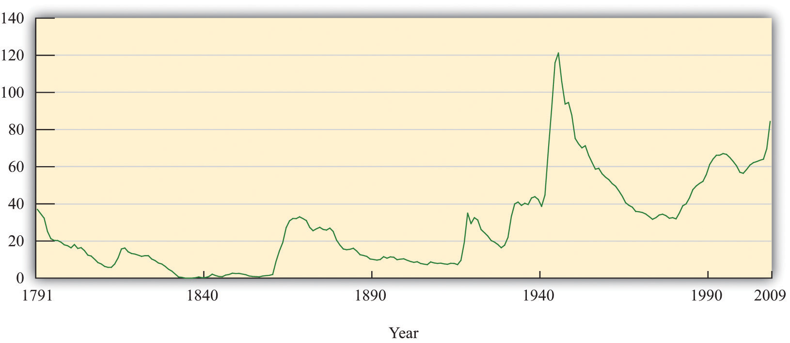
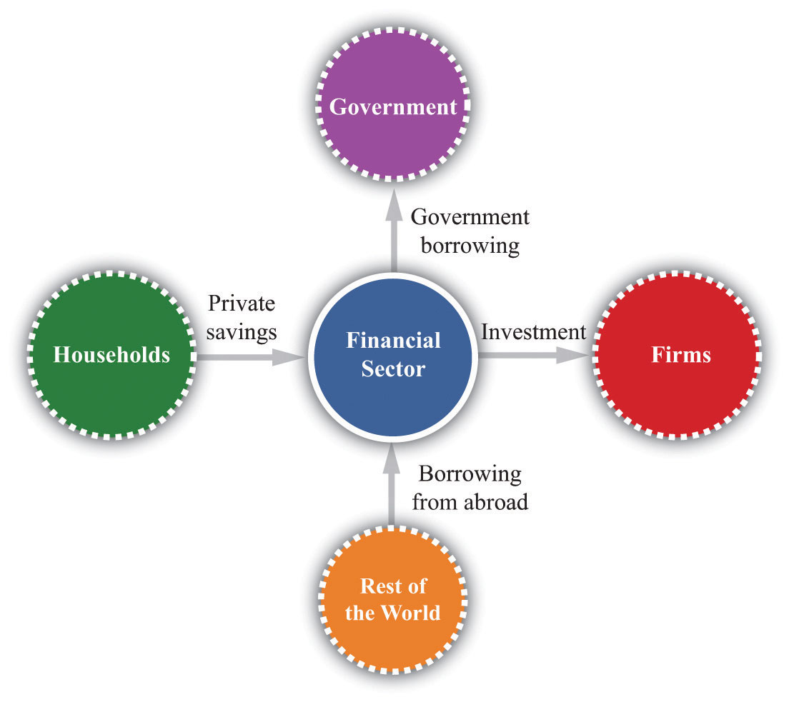
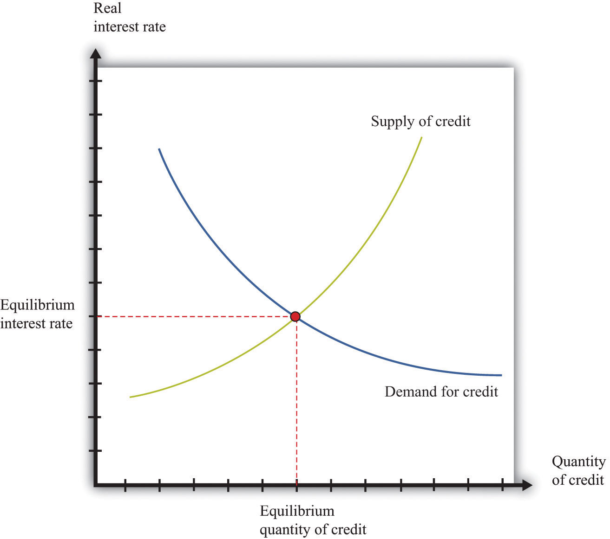
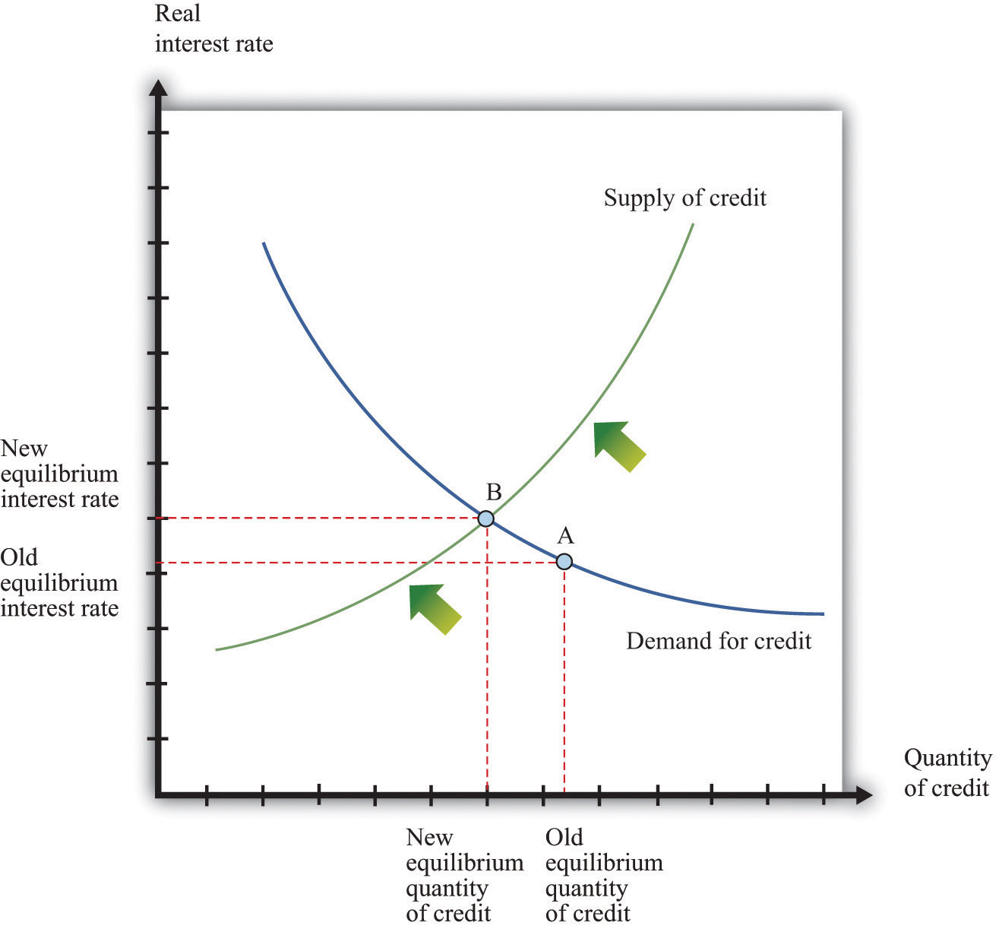

…is a big number. It is the total amount of US government debt outstanding as of June 11, 2011. This number, which changes every day, is reported by the US Treasury Department at the Treasury Direct website (http://www.treasurydirect.gov/NP/BPDLogin?application=np).
The debt of the United States is the subject of a growing political storm in Washington. Indeed, in August 2011 there seemed to be a very real possibility that the US Congress would refuse to raise the “debt ceiling”—an upper limit on the size of the government debt. Had that occurred, the government would no longer have been able to fulfill all its obligations. Many commentators believe that the US government is facing a crisis with respect to its budget policies—specifically, the fact that the government is running persistent budget deficits. The issues are not the stuff of dry academic debate. If you are a typical reader of this book, you will be working and paying taxes over the next 50 years. Yours is the future generation that will be called on to deal with present-day deficits; debates about government deficits today are debates about your standard of living. If deficits matter to anyone, they should matter to you.
Just like a household, a government has income and outlays. If a household’s outlays exceed its income, then it must borrow to finance its spending. And if a household borrows repeatedly, it builds up debt. The same is true of governments. If a government spends more than its income, then it is running a deficit that must be financed by borrowing. Repeated government deficits lead to the existence of a stock of government debt.
In recent decades, the US federal government has run a deficit much more often than not. The federal government has been in deficit for all but 4 years between 1960 and 2011. As a consequence, the stock of debt outstanding in the United States has increased from $290 billion to more than $14 trillion.
Most of us cannot really conceptualize what this sum means. We can try visual images: if we stacked up 14 trillion dollar bills, we would get a pile half a million miles high—more than twice the distance to the moon. But it is easiest to get a handle on the deficit if we divide by the number of people in the economy to obtain the debt per person. As of August 9, 2011, according to the US National Debt Clock (http://www.brillig.com/debt_clock), this number is $46,905.36. This means that if the government wanted to pay off its debt today, each and every woman, man, and child in the United States would have to be taxed by this amount, on average, to pay off the obligations of the government.
US citizens hold more than half of the debt—about 60 percent. So if the government were to pay off its debt, the majority would end up being redistributed in the economy from taxpayers to holders of US government bonds. Foreigners hold the remaining 40 percent, so this money would be transferred from US taxpayers to citizens of other countries. The US government is not proposing to pay off the existing debt, however. To the contrary, the government is projected to run budget deficits for the foreseeable future, meaning that the stock of debt, and the obligation of future generations, will continue to grow.These forecasts are available from the Congressional Budget Office (CBO; http://www.cbo.gov).
In response to concern over government deficits, one proposal has arisen over and over again: a balanced-budget amendment to the US Constitution. Such a measure would simply make deficits illegal. A balanced-budget amendment came within one vote of passing in a 1997 US Senate vote, and one was passed by the US House of Representatives in 1997. Another bill was introduced by a group of US House members in 2003. Here is part of the text of the 2003 bill:
SECTION 1. Total outlays for any fiscal year shall not exceed total receipts for that fiscal year, unless three-fifths of the whole number of each House of Congress shall provide by law for a specific excess of outlays over receipts by a rollcall vote.
SECTION 2. The limit on the debt of the United States held by the public shall not be increased, unless three-fifths of the whole number of each House shall provide by law for such an increase by a rollcall vote.
SECTION 3. Prior to each fiscal year, the President shall transmit to the Congress a proposed budget for the United States Government for that fiscal year in which total outlays do not exceed total receipts.Although such bills are typically termed “balanced-budget amendments,” they often, as is the case here, permit surpluses. US House of Representatives, “H.J.RES.22—Proposing a Balanced-Budget Amendment to the Constitution of the United States,” February 13, 2003, accessed July 20, 2011, http://thomas.loc.gov/cgi-bin/query/z?c108:H.J.RES.22:.
The Tea Party, which rose to some political prominence in the United States in 2010, campaigned in favor of a balanced-budget amendment as well. In July 2011, the House of Representatives passed HR 2560, called the Cut, Cap, and Balance Act, which (among other things) called for a constitutional amendment to balance the budget to be transmitted to the states for their consideration.The Cut, Cap, and Balance Bill is presented at “Bill Text Versions: 112th Congress (2011–2012) H.R.2560,” THOMAS: The Library of Congress, accessed September 20, 2011, http://thomas.loc.gov/cgi-bin/query/z?c112:H.R.2560: For ongoing discussion, read Rep. Mike Coffman, “Balanced Budget Amendment Caucus,” accessed July 20, 2011, http://coffman.house.gov/index.php?option=com_content&view=article&id=257&Itemid=10. This bill was not passed by the Senate. Whether this political activity will ever generate a constitutional amendment remains an open question and a point of debate in the 2012 election.
The discussion of constitutional limits on budget deficits is not limited to the United States. In 2009, Germany amended its constitution to limit federal budget deficits to 0.35% of GDP by 2016. This limit applies when the German economy is operating near its potential output. The regulations allow the German government to run deficits during recessions but require surpluses in times of high economic activity.The fiscal situation in Germany is described in “Reforming the Constitutional Budget Rules in Germany,” Federal Ministry of Finance—Economics Department, September 2009, accessed September 20, 2011, http://www.kas.de/wf/doc/kas_21127-1522-4-30.pdf?101116013053.
Should the government be forced to balance its budget each year, as such measures suggest? There are certainly good reasons why households sometimes incur debt—to pay for a house, a new car, or advanced education. Perhaps the same is true of governments. We should not presume that deficits are harmful without first trying to understand why they occur. Others have even argued that deficits are neither good nor bad but are simply unimportant. Indeed, Vice President Cheney is reported to have said that “[President] Reagan proved that deficits don’t matter.”Quoted in Ron Suskind, The Price of Loyalty: George W. Bush, the White House, and the Education of Paul O’Neill (New York: Simon and Schuster), 291.
So are deficits bad for the economy, good for the economy, or just irrelevant? Our goal in this chapter is to understand the economic effects of government budget deficits so that we can evaluate competing claims such as these and ultimately help you answer the following question.
Should the government be forced to balance its budget?
We go through five steps in our evaluation of the merits of a balanced-budget amendment:
After you have read this section, you should be able to answer the following questions:
We begin by being careful and precise about terminology. The terms deficit and debt are sometimes used sloppily in everyday discourse; as a consequence, much nonsense is spoken about fiscal policy. We must first make sure that we understand exactly what these terms mean.The CBO (http://www.cbo.gov/showdoc.cfm?index=6060&sequence=13) has a glossary of terms on its web page.
The government deficitThe difference between government outlays and revenues. is the difference between government outlaysGovernment purchases of goods and services plus transfers. and government revenuesMoney that flows into the government sector from households and firms, largely through taxation.. Inflows and outflows are part of the circular flow of income. Revenues flow to the government when it imposes taxes on households and firms and when it collects money through various other fees. For our purposes here, we do not need to distinguish all the different kinds of taxes, and we do not worry about whether they are paid by firms or by households. All that matters is that, in the end, some of the income generated in the economy flows to the government.The government also collects Social Security payments, which are discussed in more detail in Chapter 28 "Social Security". These are just another kind of tax.
Money flows out in the form of government purchases of goods and services and government transfers. Government purchasesSpending by the government on goods and services. include things like roads, streetlamps, schools, and missiles. They also include wage payments for government employees—that is, the purchase of the services of teachers, soldiers, and civil servants. Outlays also occur when government gives money to households. These are called transfer payments, or transfersA cash payment from the government to individuals and firms. for short. Examples include unemployment insurance, Social Security payments, and Medicare payments. Finally, transfers include the interest payments of the government on its outstanding obligations.
The outlays of the government and its revenues are not always equal. The difference between government purchases and transfers and government revenues represents a government deficit, as set out in the following definition:
government deficit = outlays – revenues = government purchases + transfers − tax revenues = government purchases − (tax revenues − transfers) = government purchases − net taxes.Often we find it useful to group taxes and transfers together as “net taxes” and separate out government purchases, as in the last line of our definition.
When outflows are less than inflows, then we say there is a government surplusTotal tax revenues collected by the governments less its purchases of goods and services and transfers to households.. In other words, a negative government deficit is the same thing as a positive government surplus, and a negative government surplus is the same thing as a positive government deficit:
government surplus = −government deficit.A government surplus is sometimes called “government savings.” When the government runs a deficit, borrowing from the financial markets funds such spending. When the government runs a surplus, these funds flow into the financial markets and are available for firms to borrow.
To illustrate the calculation of the deficit, we examine some made-up numbers in Table 29.1 "Calculating the Deficit". Our equation defining the deficit tells us that we can calculate it two ways. Look, for example, at year 3. The level of government spending is 200, tax receipts are 160, and transfers are 20.
Obviously, we get the same answer either way; it is just a matter of how we group the different terms together. It might seem natural to group transfers with government expenditures (since they are both outlays). Conceptually, though, transfers are more like taxes, in that they represent a flow of dollars that is not matched by a flow of goods or services. The difference is that taxes flow from into the government; transfers flow the other way. Government expenditures are very different: they represent purchases of real gross domestic product (real GDP) produced in the economy, thus contributing to the overall demand for output.
Table 29.1 Calculating the Deficit
| Year | Government Purchases | Tax Revenues | Transfers | Net Taxes | Deficit |
|---|---|---|---|---|---|
| 1 | 50 | 30 | 10 | 20 | 30 |
| 2 | 100 | 160 | 40 | 120 | −20 |
| 3 | 200 | 160 | 20 | 140 | 60 |
| 4 | 200 | 220 | 20 | 200 | 0 |
| 5 | 140 | 160 | 20 | 140 | 0 |
In Table 29.1 "Calculating the Deficit", the deficit varies considerably over time. It is low in year 1, negative in year 2 (in other words, there is a surplus), high in year 3, and zero in years 4 and 5. Between year 1 and year 2, government purchases and transfers increased, but tax revenues increased even more. In fact, they increased sufficiently to turn the deficit into a surplus. Between years 2 and 3, government purchases increased, and transfers decreased. However, the decrease in transfers was less than the increase in government purchases, so total government outlays increased substantially. Tax revenues stayed constant, so the government went back into deficit.
In years 4 and 5 the government ran a balanced budget. If we compare year 4 to year 3, we see that the budget could be balanced by raising taxes (from 160 to 220) and leaving outlays unchanged. Conversely, by comparing year 5 to year 3, we see that the budget could be balanced by cutting spending and leaving taxes unchanged. A balanced budget is consistent with high taxes and high spending or low taxes and low spending. It is the combination of low taxes and high spending that give us a deficit. Table 29.1 "Calculating the Deficit" makes it clear that changes in the deficit can be explained only by examining all components of the government budget constraint.
We begin with the government budget constraint as it operates in a single year. This budget constraint can be seen in terms of the flows into and from the government sector in the circular flow, as shown in Figure 29.1 "The Government Sector in the Circular Flow" (which explicitly shows that taxes come from households and firms). Later we discuss a second government budget constraint that links spending and revenues over longer periods of time.
Figure 29.1 The Government Sector in the Circular Flow

The inflows into the government sector come from taxes and borrowing from the financial sector. The outflows comprise government purchases and government transfers.
You might be wondering how it is possible for the government to have outlays that exceed its revenues. The answer is given by the government budget constraint. The government budget constraintA limit stating that the deficit must be financed by issuing government debt. says that the deficit, which is the difference between outlays and revenues, must be financed by borrowing. If outlays exceed revenues in a given year, then the government must somehow make up the difference. It does so by borrowing from the public. In this sense, the government is no different from a household. Each of us can, like the government, spend more than we earn. When we do, we must either borrow from someone or draw on our savings from the past.
The government borrows by issuing government debtThe total outstanding obligations of a government at a point in time.. This debt can take several forms. The government has many types of obligations, ranging from short-term Treasury Bills to longer-term bonds. For our analysis, we do not need to distinguish among these different assets.
Toolkit: Section 31.33 "The Government Budget Constraint" and Section 31.27 "The Circular Flow of Income"
You can review the government budget constraint and the circular flow of income in the toolkit.
Table 29.2 "Recent Experience of Deficits and Surpluses (Billions of Dollars)" shows some actual numbers for the United States: receipts, outlays, and the federal budget deficit in current dollars for fiscal years 1990 to 2010.Government budget numbers in the United States are reported for a “fiscal year,” which runs from October to September. Thus fiscal year 2000 ran from October 1, 1999, to September 30, 2000.
Table 29.2 Recent Experience of Deficits and Surpluses (Billions of Dollars)
| Fiscal Year | Receipts | Outlays | Surplus or Deficit (−) |
|---|---|---|---|
| 1990 | 1,032.0 | 1,253.1 | −221.0 |
| 1991 | 1,055.1 | 1,324.3 | −269.2 |
| 1992 | 1,091.3 | 1,381.6 | −290.3 |
| 1993 | 1,154.5 | 1,409.5 | −255.1 |
| 1994 | 1,258.7 | 1,461.9 | −203.2 |
| 1995 | 1,351.9 | 1,515.9 | −164.0 |
| 1996 | 1,453.2 | 1,560.6 | −107.4 |
| 1997 | 1,579.4 | 1,601.3 | −21.9 |
| 1998 | 1,722.0 | 1,652.7 | 69.3 |
| 1999 | 1,827.6 | 1,702.0 | 125.6 |
| 2000 | 2,025.5 | 1,789.2 | 236.2 |
| 2001 | 1,991.4 | 1,863.2 | 128.2 |
| 2002 | 1,853.4 | 2,011.2 | −157.8 |
| 2003 | 1,782.5 | 2,160.1 | −377.6 |
| 2004 | 1,880.3 | 2,293.0 | −412.7 |
| 2005 | 2,153.9 | 2,472.2 | −318.3 |
| 2006 | 2,406.9 | 2,655.1 | −248.2 |
| 2007 | 2,568.0 | 2,728.7 | –160.7 |
| 2008 | 2,524.0 | 2,982.5 | –458.6 |
| 2009 | 2,105.0 | 3,517.7 | –1,412.7 |
| 2010 | 2,161.7 | 3,455.8 | –1,294.1 |
Source: “Historical Budget Tables,” Congressional Budget Office, January 2011, accessed September 20, 2011, http://www.cbo.gov/ftpdocs/120xx/doc12039/HistoricalTables[1].pdf.
In the early 1990s, the government ran a deficit of about $200–300 billion every year. (Note that a negative number in the last column corresponds to a government deficit.) In the mid-1990s, however, the deficit began to decrease. Both outlays and receipts were increasing, but receipts were increasing more quickly. By 1998, the federal budget was in surplus, and it reached a peak of $236 billion in 2000. Thereafter, revenues decreased for several years, while spending continued to increase. By 2002, the budget had gone back into deficit again, and by the middle of the decade, the deficit was at record levels.
As is evident from Table 29.2 "Recent Experience of Deficits and Surpluses (Billions of Dollars)", the budgetary picture changed dramatically with the onset of the severe recession in 2008. Revenues decreased and outlays increased so that the budget deficit widened considerably, to more than $1 trillion in both 2009 and 2010.
If you look at data on the government budget, you will see that the federal budget is divided into “on-budget” and “off-budget” items. Table 29.3 "On-Budget, Off-Budget, and Total Surplus, 2010 (Billions of Dollars)" shows these numbers for fiscal year 2010. The Congressional Budget Office defines off-budget items as follows. “Spending or revenues excluded from the budget totals by law. The revenues and outlays of the two Social Security trust funds (the Federal Old-Age and Survivors Insurance Trust Fund and the Disability Insurance Trust Fund) and the transactions of the Postal Service are off-budget.”Congressional Budget Office, Glossary, accessed October 19, 2011, http://www.cbo.gov/doc.cfm?index=2727&type=0&sequence=14
The transactions of the US Postal Service are not that important, so you can essentially think of the off-budget items as being the Social Security system. Since the Social Security system was in surplus over much of this period, the on-budget deficit is larger than the total. From Table 29.3 "On-Budget, Off-Budget, and Total Surplus, 2010 (Billions of Dollars)", the total government deficit of $1,294 billion in 2010 reflects an on-budget deficit and a small off-budget surplus.
The idea behind the separate budgeting is that Social Security represents a known set of future government obligations. For this reason the government has, in effect, set aside a separate account for Social Security revenues and outlays (much as you, as an individual, might decide you want a separate account for your savings).We discussed the Social Security Trust Fund, as this account is called, in Chapter 28 "Social Security". At least in theory, this separates the debate about Social Security from the debate about current government spending and receipts. Many policy discussions do focus just on the “on-budget” accounts. In the end, though, all these monies flow either into or from the federal government. The humorist Dave Barry once remarked that what distinguishes off-budget items is that “these are written down on a completely different piece of paper from the regular budget.”Dave Barry, “The Mallomar Method,” DaveBarry.com, March 24, 1991, accessed August 28, 2011, http://www.davebarry.com/misccol/mallomar.htm. What is more, there are other known future obligations, such as Medicare, that are not treated separately. The on-budget/off-budget distinction is really no more than an accounting fiction, and in terms of the overall economic effects of the deficit, it is better to focus on the total.
Table 29.3 On-Budget, Off-Budget, and Total Surplus, 2010 (Billions of Dollars)
| Receipts | Outlays | Surplus or Deficit (−) | |
|---|---|---|---|
| On-Budget | 1,530.1 | 2,9091.1 | −1,371.1 |
| Off-Budget | 631.7 | 554.7 | 77.0 |
| Total | 2,161.7 | 3,455.8 | −1,294.1 |
Source: US Treasury, Financial Management Service, October 2010 Statement, accessed September 20, 2011, http://www.fms.treas.gov/mts/mts0910.txt.
There are mixed messages to take away from Table 29.2 "Recent Experience of Deficits and Surpluses (Billions of Dollars)". The experience of budget surpluses in the 1990s tells us that budget balancing is possible. At the same time, more recent experience suggests that substantial changes in receipts and/or outlays are now needed to balance the budget. To explore this somewhat further, look at Table 29.4 "Federal Outlays, 2010 (Billions of Dollars)", which shows various outlays for 2010. As we already know, total spending for that year was $3.5 trillion. National defense, Social Security, and health-care programs together account for $2.2 trillion, or about 63 percent of the total outlays. Other nondiscretionary spending—largely outlays such as retirement payments to federal employees, unemployment insurance, housing assistance, and food stamps—accounts for a further $401 billion. Interest payments account for $196 billion. These categories together account for more than 80 percent of federal outlays.
Table 29.4 Federal Outlays, 2010 (Billions of Dollars)
| Item | Amount | Total Outlays (%) |
|---|---|---|
| Defense | 689 | 19.9 |
| Nondefense Discretionary Spending | 658 | 19.0 |
| Social Security | 701 | 20.3 |
| Health Care Programs (including Medicare and Medicaid) | 810 | 23.4 |
| Other Nondiscretionary Spending | 401 | 11.6 |
| Interest Payments | 196 | 5.7 |
| Total | 3,456 | 100.0 |
Source: Compiled from data in CBO, “The Budget and Economic Outlook: An Update,” August 2011, accessed September 20, 2011, http://www.cbo.gov/ftpdocs/123xx/doc12316/08-24-BudgetEconUpdate.pdf. Totals do not add up because of rounding errors.
Just looking at those numbers should make it clear that it is very difficult to balance the budget simply by cutting federal spending. Almost everyone agrees that there is waste in the federal government, and there are programs that could and almost certainly should be abolished. (This is not to say that you could find even a single program that everyone would want to abolish. Every program benefits someone, after all. But there are certainly programs that most people would agree are wasteful.) However, the vast majority of the budget is taken up with either essential functions of government or programs that enjoy huge political popularity. Few politicians would sign up for closing the public schools, the abolition of unemployment insurance, or the cancellation of veterans’ benefits.
The budget accounts distinguish between mandatory and discretionary spending. Many of the big items listed in Table 29.4 "Federal Outlays, 2010 (Billions of Dollars)" fall into the mandatory category—that is, outlays that are required by existing law. Less than 40 percent of outlays in 2010 were discretionary, and half of those were national defense spending. The remaining outlays were mandatory spending or payment of interest on the outstanding debt.“Budget and Economic Outlook: Historical Budget Data,” Congressional Budget Office, January 2011, accessed July 20, 2011, http://www.cbo.gov/ftpdocs/120xx/doc12039/HistoricalTables[1].pdf.
If the government were to pass a balanced-budget amendment, in other words, the hard job of cutting spending or raising taxes would remain. Recall Section 3 of the amendment that we quoted in the chapter opener: “the President shall transmit to Congress a proposed budget…in which total outlays do not exceed total receipts.” Even with a balanced-budget amendment, the president would still have to propose either major cuts in existing popular programs or increases in taxes. However, such an amendment might provide “political cover” for the president and Congress: they could explain their support for unpopular spending cuts or tax increases by saying that the balanced-budget amendment gave them no choice.
We discussed in Section 29.1.2 "The Single-Year Government Budget Constraint" that the single-period government budget constraint links spending and revenues to the deficit (or surplus) of the government each year. There is a second constraint faced by the government, called the intertemporal budget constraintA limit stating that the discounted present value of taxes minus the discounted present value of outlays (excluding interest on the debt) must equal the current stock of debt outstanding., linking deficits in one year to deficits in other years.
When you take out a loan, you will ultimately have to repay it. The same is true of the government; when it takes out a loan, it will ultimately have to repay the loan as well. If the government chooses to pay for its expenditures today by borrowing instead of through current taxes, then it will need additional taxes at some point in the future to pay off its loan. The intertemporal budget constraint is just a fancy way of saying that, like everyone else, the government has to pay off its loans at some point.Actually, there is one way in which the government is different from private individuals. For practical purposes, we expect that the government will go on forever. This means that the government could always have a stock of outstanding debt. However, there are practical limits on this stock—for one thing, households will not lend unlimited amounts to the government. Thus it is generally fair to say that additional borrowing by the government will have to be repaid. As a consequence, tax and spending decisions at different dates are linked. Although governments can borrow or lend in a given year, the government’s total spending over time must be matched by revenues.
To express the intertemporal budget constraint, we introduce a measure of the deficit called the primary deficitThe difference between government outlays, excluding interest payments and government revenues.. The primary deficit is the difference between government outlays, excluding interest payments on the debt, and government revenues. The primary surplusThe inverse of the primary deficit. is equal to the minus of the primary deficit and is the difference between government revenues and government outlays, excluding interest payments on the debt. In our example in Table 29.1 "Calculating the Deficit", the deficit in year 1 was 30. If payment of interest on outstanding debt was 5, then the primary deficit would be 25, and the primary surplus would be −25.
The intertemporal budget constraint says that if the government has some existing debt, it must run surpluses in the future so that it can ultimately pay off that debt. Specifically, it is the requirement that
current debt outstanding = discounted present value of future primary surpluses.This condition means that the debt outstanding today must be offset by primary budget surpluses in the future. Because we are adding together flows in the future, we have to use the tool of discounted present value. If, for example, the current stock of debt is zero, then the intertemporal budget constraint says that the discounted present value of future primary surpluses must equal zero.
Toolkit: Section 31.5 "Discounted Present Value"
You can review the meaning and calculation of discounted present value in the toolkit.
The stock of debt is linked directly to the government budget deficit. When the government runs a budget deficit, it finances the deficit by issuing new debt. The deficit is a flow, which is matched by a change in the stock of government debt:
change in government debt (in given year) = deficit (in given year).If there is a government surplus, then the change in the debt is a negative number, so the debt decreases. The total government debt is simply the accumulation of all the previous years’ deficits. From this equation, the stock of debt in a given year is equal to the deficit over the previous year plus the stock of debt from the start of the previous year. (In this discussion, we leave aside the fact that the government may finance part of its deficit by issuing new money. In the United States and most other economies, this is a minor source of funding for the government.See Chapter 26 "Inflations Big and Small" for more discussion. More precisely, then, every year,change in government debt = deficit − change in money supply.Written this way, the equation tells us that the part of the deficit that is not financed by printing money results in an increase in the government debt.)
To see the interactions between deficits and the stock of debt in action, examine Table 29.5 "Deficit and Debt", which takes the deficit numbers from Table 29.1 "Calculating the Deficit" and calculates the corresponding debt. We suppose that there is initially zero debt at the beginning of year 1. The deficit of 30 in the first year means that there is outstanding debt of 30 at the end of that year. In the second year, there is a budget surplus of 20. This reduces the debt, but it is not sufficient to bring the debt all the way back to zero. Outstanding debt at the end of the year is 10. In the third year, the deficit of 60 must be added to the existing debt of 10, so the debt at the end of the year is 70.
Table 29.5 Deficit and Debt
| Year | Deficit | Debt (Start of Year) | Debt (End of Year) |
|---|---|---|---|
| 1 | 30 | 0 | 30 |
| 2 | −20 | 30 | 10 |
| 3 | 60 | 10 | 70 |
| 4 | 0 | 70 | 70 |
| 5 | 0 | 70 | 70 |
In years 4 and 5, the government runs a balanced budget: the deficit is zero. But the stock of debt stays unchanged. The debt is equal to the accumulation of all the deficits. Eliminating deficits (for example, by a balanced-budget amendment) means that the debt stays at its existing level. Eliminating deficits is not the same thing as paying off the debt.
Figure 29.2 US Surplus and Debt, 1962–2010

Source: Congressional Budget Office.
The experience of the US deficit and debt held by the public since 1962 is summarized in Figure 29.2 "US Surplus and Debt, 1962–2010". The surplus is shown in the upper figure, and the level of debt is shown in the lower figure. All values are in current dollars. At the far left of the graph, we see that the US government ran relatively small deficits (negative surpluses) in the 1960s and early 1970s. As a result, the debt increased slowly. From the mid-1970s to the mid-1990s, deficits were substantial, so the amount of debt outstanding grew rapidly. As we saw earlier, there was a brief period of surplus in the late 1990s and a corresponding decrease in the debt, but deficit spending recommenced during the George W. Bush administration (2001–2008). The debt increased again.
Although an analysis of deficits and debt is often presented using data similar to those in Figure 29.2 "US Surplus and Debt, 1962–2010", this figure is incomplete in two ways: (1) these numbers are not corrected for inflation (they are current dollar figures), and (2) there is no sense of how large the deficit and the debt are relative to the aggregate economy. Figure 29.3 "US Surplus and Debt as a Fraction of GDP, 1962–2010" remedies both defects by showing the surplus and the debt as a fraction of nominal GDP. Because nominal GDP is also measured in dollars, these ratios are just numbers. We see that the deficit has been a relatively stable fraction of GDP, averaging about 2.7 percent of GDP. The debt level has averaged about 36 percent over the period.
Figure 29.3 US Surplus and Debt as a Fraction of GDP, 1962–2010

Source: Congressional Budget Office and Economic Report of the President.
The federal debt is now in excess of $14 trillion. So if the United States were to pass a balanced-budget amendment binding on the federal government, to take effect in 2012, say, the stock of debt would thereafter remain fixed at well over $14 trillion. To reduce the stock of debt outstanding, the deficit must be negative: the change in the stock of debt will be negative only if the government runs a surplus.
Moreover, the government must pay interest on its outstanding debt. Recall that when the government runs up debt, it is borrowing from the general public. The debt of the government is an asset from the perspective of households: it is one of the ways in which people can hold their saving. Holders of government bonds earn interest on these assets. Look again at Table 29.4 "Federal Outlays, 2010 (Billions of Dollars)". In the United States, interest payments on the debt amounted to $184 billion in 2005. Interest payments on the debt amount to more than half of the deficit. Balancing the budget therefore means that, once we exclude interest payments, spending plus transfers would have to be much smaller than tax revenues. If there is outstanding debt, a balanced budget means that the government must run a primary surplus.
To summarize, we have discovered three things about a balancing the budget:
Given that the US government makes such large interest payments on outstanding debt, who receives those payments? US government debt is held by households, firms, and governments in many countries. Table 29.6 "Foreign Holdings of US Treasury Securities as of August 2008 (Billions of Dollars)" lists some of the foreign countries holding US Treasury securities (bills, bonds, and notes) in two different months: August 2008 and May 2011.
Table 29.6 Foreign Holdings of US Treasury Securities as of August 2008 (Billions of Dollars)
| Country | Holding as of August 2008 | Holdings as of May 2011 |
|---|---|---|
| Japan | 585.9 | 912.4 |
| China | 541.0 | 1159.8 |
| oil exporters | 179.8 | 229.8 |
| Mexico | 33.5 | 27.7 |
| Canada | 27.7 | 90.7 |
| total | 2,740.3 | 4,514.0 |
Source: “Major Foreign Holders of Treasury Securities,” US Department of the Treasury, July 18, 2011, accessed July 20, 2011, http://www.treasury.gov/resource-center/data-chart-center/tic/Documents/mfh.txt.
In May 2011, the total foreign ownership of US Treasury securities was more than 45 percent of the total privately held US public debt (“privately held” means we are excluding debt held by the Federal Reserve System). As you can see from Table 29.6 "Foreign Holdings of US Treasury Securities as of August 2008 (Billions of Dollars)", the ownership of US debt has changed significantly over the past few years. Japan was the largest holder of US debt in August 2008, but more recently China has taken its place.
You might wonder how these countries came to hold such a large fraction of US debt. Part of the answer goes back to the interaction between trade and capital flows between the United States and the rest of the world. The key is the link between trade deficits and borrowing from abroad:
borrowing from other countries = imports − exports = trade deficit.This equation tells us that whenever a country runs a trade deficit, it must finance that deficit by borrowing from abroad. The United States has been running trade deficits since the early 1970s. Consequently, foreign countries have been accumulating US assets, and government debt is one important such asset.
Observers sometimes comment on the fact that a substantial fraction of government debt is “owed to ourselves” (that is, it is held by US citizens) and therefore less of a cause for concern than the fraction that is owned by foreigners. Does this reasoning make sense? The answer is “not very much.” To see why, consider a US citizen who owns some US government bonds. Now imagine that she sells those bonds to a German bank and uses the proceeds to buy some General Motors (GM) shares that are currently owned by a French investment bank.
All that has happened here is some rebalancing of portfolios. One individual decided to shift her assets around, so she now owns GM shares instead of government bonds. Likewise, the German bank decided it wanted more US bonds in its portfolio, whereas the French investment bank decided it wanted fewer GM shares. These kinds of transactions go on all the time in our economy.
Our hypothetical citizen is just as wealthy as she was before; she is simply holding her wealth in a different form. The same is true for the German and French financial institutions. Yet foreigners hold more of the national debt than previously. Domestic or foreign ownership of the debt can change with no implications for the overall indebtedness of individuals or the country. It is more meaningful to look at the amount of foreign debt that has been accumulated by a country as a result of its borrowing from abroad. Foreign debt represents obligations that will have to be repaid at some future date.
Commentators sometimes express worry over the fact that foreign central banks—notably those of Japan and China—own substantial amounts of US debt. There is a legitimate concern here: if one or more of those banks suddenly decided they no longer wanted to hold that debt, then there might be a large change in US interest rates and resulting financial instability. But the real issue is not that the debt is foreign owned. Rather, it is that a large amount of debt is held by individual institutions big enough to move the market.
At the same time, the Chinese are equally concerned about the value of the US government debt they hold. In their view, they traded away goods and services for pieces of paper that are claims to be paid by the US government. These claims are in nominal terms (in dollars). Hence any change in the exchange rate changes the value of this debt to the Chinese. If, for example, the dollar depreciates relative to the Chinese renmimbi (RMB), then the real value (in terms of Chinese goods and services) of this debt is reduced.
The RMB/dollar exchange rate was 8.28 in January 2000. A holder of a US dollar bill could obtain 8.28 RMB in exchange. This rate was 8.07 in January 2006. However, by June 2011, the exchange rate was 6.48. This means that someone who exchanged RMB for dollars in 2000 and then sold those dollars for RMB in June 2011 lost about 20 percent in nominal terms.
After you have read this section, you should be able to answer the following questions:
Now that we have defined budget deficits, budget surpluses, and the government debt, it is time to examine what determines these economic variables. The budget deficit reflects two forces: the stance of fiscal policy and the state of the economy.
Fiscal policyChanges in taxation and the level of government purchases, typically under the control of a country’s lawmakers. refers to the choice by the government of (1) its levels of spending on goods and services, (2) its transfers to households, and (3) the tax rates it sets on households and firms. Most countries have different levels of government, so some tax and spending decisions are made for the whole country, whereas others are made locally. In principle, we can include all levels of government in our discussion. This means that, in the United States, “government” can refer to the totality of local government, state government, and the federal government. In practice, though, it is the decisions of the federal government that have the main impact on the overall fiscal policy of the country. The same is true in other countries—local government decisions are not usually very important for the overall stance of fiscal policy.
There are two aspects of fiscal policy: government spending and tax/transfer policy. These fiscal policy choices determine the deficit.In other chapters we examine the effects of government spending on the aggregate economy. For example, Chapter 22 "The Great Depression" explained how changes in government spending can sometimes be used to stimulate the overall economy.
Over long periods of time, government spending increases as an economy gets richer. Over shorter periods of time, however, the level of government spending is not closely influenced by the overall level of economic activity. For this reason, we typically suppose that government spending is an exogenous variableA variable determined outside the model that is not explained in the analysis. that is determined “outside” our framework of analysis. We illustrate this in Figure 29.4 "Government Spending".
Figure 29.4 Government Spending

We suppose that government spending is independent of the level of gross domestic product (GDP), which means that it shows up as a horizontal line.
Our interest here is in deficits and the debt rather than the details of taxation, so we take a very simple approach to taxation. We assume that there is a constant tax rate that applies to all levels of income and abstract away from all the other complexities of the tax schedule. This view of the tax and transfer system is summarized by the following equation:
net taxes = tax rate × income.We illustrate this relationship in Figure 29.5 "The Tax Function". The slope of the line is the tax rate. In other words, for every dollar increase in income, net tax receipts increase by the amount of the tax rate.
Figure 29.5 The Tax Function

Net tax receipts depend on the state of the economy. When income is higher, the government collects more in taxes and pays out less in transfers.
Taxes depend positively on income because of the way the tax code is written. Conversely, transfers (such as unemployment insurance or Medicare payments) tend to depend negatively on income: when people are richer, they are less likely to need transfers from the government. The tax rate in the figure captures the overall effect: higher income increases net tax revenues both because people pay more taxes and because they receive fewer transfers.
Table 29.7 "Tax Receipts and Income" provides an example of tax receipts at different levels of income, when the tax rate is 10 percent. At the level of an individual household, taxes increase and transfers decrease as the household’s income increases. At the level of the entire economy, exactly the same thing is true. As real GDP increases, tax receipts increase and transfers decrease. Increased income, holding the tax rate fixed, leads to increased tax receipts. At the same time, increases in the tax rate lead to higher tax receipts at each level of income. Thus there are two factors determining tax receipts in the economy: the tax rate and the overall level of economic activity.
Table 29.7 Tax Receipts and Income
| Income | Tax Rate | Tax Receipts |
|---|---|---|
| 0 | 0.1 | 0 |
| 100 | 0.1 | 10 |
| 500 | 0.1 | 50 |
| 1,000 | 0.1 | 100 |
| 2,000 | 0.1 | 200 |
| 5,000 | 0.1 | 500 |
As the level of economic activity—real GDP—increases, the tax receipts of the government also increase. To determine the deficit, we need to know both the current fiscal policy (as summarized by the level of government purchases and the tax rate) and the level of economic activity. Building on the example in Table 29.7 "Tax Receipts and Income", suppose that government purchases are 200 and the tax rate is 10 percent. The relationship between the level of economic activity (GDP) and the deficit is given in Table 29.8 "Deficit and Income". In this example, the level of GDP must reach 2,000 before the budget is in balance (Figure 29.6 "Government Spending and Tax Receipts").
Table 29.8 Deficit and Income
| GDP | Government Purchases | Tax Receipts | Deficit |
|---|---|---|---|
| 0 | 200 | 0 | 200 |
| 100 | 200 | 10 | 190 |
| 500 | 200 | 50 | 150 |
| 1,000 | 200 | 100 | 100 |
| 2,000 | 200 | 200 | 0 |
| 5,000 | 200 | 500 | −300 |
Figure 29.6 Government Spending and Tax Receipts

Tax receipts increase as income increases, whereas government spending is unaffected by the level of GDP.
The dependence of the deficit on real GDP and the stance of fiscal policy are summarized in Figure 29.7 "Deficit/Surplus and GDP", which graphs the numbers from Table 29.8 "Deficit and Income". The deficit/surplus is measured on the vertical axis, and real GDP is measured on the horizontal axis. The deficit/surplus line is drawn for a given tax rate. As real GDP increases, the deficit decreases. Thus the line in Figure 29.7 "Deficit/Surplus and GDP" has a negative slope.
Figure 29.7 Deficit/Surplus and GDP

The deficit equals government purchases minus net tax receipts. The deficit is positive when GDP is low, but the budget goes into surplus when GDP is sufficiently high.
The deficit/surplus is the difference between the level of government purchases and the level of receipts. There is a particular level of economic activity such that the budget is exactly in balance. In our example, this level of GDP is 2,000. The deficit is zero when income is 2,000 because that is the point at which government purchases equal tax revenues. For levels of income in excess of this level of GDP, the government budget is in surplus. In Figure 29.7 "Deficit/Surplus and GDP", we see that the budget deficit/surplus line crosses the horizontal axis when GDP is 2,000.
Increases in government purchases or reductions in the tax rate are examples of expansionary fiscal policyIncreases in government purchases or reductions in tax rates.. Decreases in government purchases or increases in the tax rate are called contractionary fiscal policyDecreases in government purchases or increases in tax rates.. Expansionary fiscal policy increases the deficit for a given level of real GDP. An increase in government spending shifts the deficit line upward, as shown in Figure 29.8 "Expansionary Fiscal Policy". With a decrease in the tax rate, by contrast, the intercept stays the same, but the line rotates upward. The effect is still to increase the deficit at all positive levels of income.
Figure 29.8 Expansionary Fiscal Policy

Expansionary fiscal policy causes the deficit to increase at all levels of income, so the deficit line shifts upward. This picture illustrates the case of an increase in government purchases.
Given that the deficit depends on both the level of real GDP and the stance of fiscal policy, it is useful to have a way to distinguish these two influences. Put differently, it is helpful to know if the deficit is large because of the level of economic activity or because of the choices of government spending and taxes. This distinction came to the forefront in the 2004 presidential election in the United States. One of the issues raised in the debates between President George W. Bush and Senator Kerry was how the forecasted surplus from 2000 turned into the massive deficits of 2004. Were the deficits caused by the state of the economy or the policy decisions undertaken by President George W. Bush? To answer such questions, we need to decompose changes in the deficit into changes due to fiscal policy and changes due to the level of economic activity.
The Congressional Budget Office (CBO; http://www.cbo.gov) produces a measure of the budget deficit, called the cyclically adjusted budget deficitThe difference between outlays and revenues calculated under the assumption that the economy is operating at potential GDP., for this purpose. The CBO first calculates a measure of potential outputThe amount of real GDP the economy produces when the labor market is in equilibrium and capital goods are not lying idle.—the level of GDP when the economy is at full employment. Then it calculates the outlays and revenues of the federal government under the assumption that the economy is operating at potential GDP. The deficit is calculated by subtracting revenues from outlays. For obvious reasons, the cyclically adjusted budget deficit is also sometimes called the full-employment deficit.“The Cyclically Adjusted and Standardized Budget Measures,” Congressional Budget Office, April 2008, accessed July 20, 2011, http://cbo.gov/ftpdocs/90xx/doc9074/StandBudgetTOC.2.1.htm.
Figure 29.9 "The Cyclically Adjusted Budget Deficit" illustrates this idea. We first calculate the level of potential output and then use the deficit line to tell us the cyclically adjusted budget deficit or surplus for the economy. The figure shows two possibilities. In the first case, there is a government deficit when actual output is equal to potential output. In the second case, there is a government surplus when output is equal to potential output. Of course, the practical calculations are somewhat trickier than this picture suggests, but the idea is straightforward.
Figure 29.9 The Cyclically Adjusted Budget Deficit

To determine the cyclically adjusted deficit or surplus in an economy, calculate the level of potential output and then use the deficit/surplus line to determine what the deficit or surplus would be at that level of output. In panel (a), the economy has a cyclically adjusted deficit, whereas in panel (b), it has a cyclically adjusted surplus.
Figure 29.10 "Cyclical Deficit" and Figure 29.11 "Structural Deficit" show that there are two distinct reasons why a government might go from surplus into deficit—as happened in 2002, for example. Suppose that, last year, the economy was at potential output and there was a cyclically adjusted surplus (point A). Now imagine that this year there is a government deficit. One possibility is that the economy went into recession, as in Figure 29.10 "Cyclical Deficit", point B. This is called a cyclical deficitA deficit that occurs when a government budget is in deficit because of the low level of real GDP. because it is due to the state of the business cycle. Another is that the stance of fiscal policy has changed—for example, because of an increase in government spending, as in Figure 29.11 "Structural Deficit", point C. The CBO calls this a standardized deficit (or structural deficit)A deficit that occurs when a government budget is in deficit because of expansionary fiscal policy..A key simplification in these pictures is that the level of potential GDP is independent of taxes and government spending. Chapter 27 "Income Taxes" explains why potential output itself might be affected by the tax code.
Figure 29.10 Cyclical Deficit

The economy went from surplus (A) to deficit (B) because of recession. Real GDP declines, tax receipts decrease, and the budget goes into deficit. The economy moves along the deficit/surplus line.
Figure 29.11 Structural Deficit

The economy went from surplus (A) to deficit (C) because of changes in fiscal policy. Real GDP does not change: it is at potential output in both cases. The deficit/surplus line shifts upward.
We have identified two factors that determine the size of the deficit: the stance of fiscal policy and the state of the economy. We can use this information to learn more about the effects of a balanced-budget amendment on the economy.
Suppose that the economy is at potential output. A balanced-budget requirement would say that the economy must be neither in surplus nor in deficit at this point. In other words, a balanced-budget requirement describes the overall stance of fiscal policy. The deficit/surplus line must be shifted to ensure that it passes through the horizontal axis at potential output, as shown in Figure 29.12 "Balanced-Budget Requirement".
Figure 29.12 Balanced-Budget Requirement

A balanced-budget requirement implies that the full-employment deficit/surplus must be zero. The deficit/surplus line must pass through zero when real GDP equals potential output.
Now suppose that, for some reason, the economy goes into recession. In Figure 29.13 "Recession with a Balanced-Budget Amendment", this means that output goes from potential output to some lower level. We know that this leads to a deficit, which is shown as a shift from point A to point B. Under a balanced-budget rule, the government is not allowed to let this situation persist. Instead the government must respond by increasing taxes or cutting spending, moving the economy from point B to point C. Similarly, if the economy went into a boom, this would tend to lead to a surplus. The government would be forced to cut taxes or increase spending to bring the budget back into balance. A balanced-budget amendment would force the government to conduct procyclical fiscal policy.In fact, the effects of a balanced-budget amendment would be even worse. The countercyclical fiscal policy would cause GDP to decrease even further, thus requiring even bigger cuts in spending or increases in taxes.
Figure 29.13 Recession with a Balanced-Budget Amendment

If the economy were to go into recession, a balanced-budget requirement would force the government to increase taxes or cut spending to bring the budget back into balance.
After you have read this section, you should be able to answer the following questions:
To evaluate the merits of a balanced-budget amendment, we need to know why governments run deficits in the first place. After all, governments may have good reasons for these policies. We have seen one explanation for deficits: governments run deficits because of economic downturns. Reductions in gross domestic product (GDP), other things being equal, lead to increases in the budget deficit. We are more concerned with why governments choose to run persistent structural deficits, though. We first look to history for clues.
Figure 29.14 Ratio of US Debt to GDP, 1791–2009
Source: Debt data from http://www.treasurydirect.gov/govt/reports/pd/histdebt/histdebt.htm; GDP data from https://eh.net/.
Figure 29.14 "Ratio of US Debt to GDP, 1791–2009" shows the ratio of US federal government debt to GDP from 1791 to 2009. The US Civil War in the 1860s, World War I in 1917, and World War II in the early 1940s all jump out from this figure. These are periods in which the stock of US federal debt soared. During the Civil War, the stock of debt was $64,842,287 in 1860 and peaked at $2,773,236,174 in 1866. The debt level was more than 40 times higher in 1866 than in 1860.
In 1915 (after World War I had started but before the United States had entered the war), the stock of debt was $3,058,136,873.16, not much more than the level in 1866. By 1919, the level of the debt was $27,390,970,113.12, an increase of almost 800 percent. During World War II, there was again a significant buildup of the debt. In 1940, the level of debt outstanding was $42,967,531,037.68, or about 42 percent of GDP. By 1946, this had increased by about 527 percent to $269,422,099,173.26. In 1946, the outstanding debt was 121 percent of GDP.
There are two other periods that show a significant buildup of the debt relative to GDP. The first is the Great Depression. This buildup was not due to a big increase in borrowing by the government. Rather, it was largely driven by the decline in the level of GDP (the denominator in the ratio). The second is the period from the 1980s to the present. The buildup of the debt in the 1980s was unprecedented in peacetime history.
Figure 29.14 "Ratio of US Debt to GDP, 1791–2009" also shows a dramatic asymmetry in the behavior of the debt-to-GDP ratio. Although the increases in this ratio are typically rather sudden, the decreases are much more gradual. Look again at the rapid increase in the debt-to-GDP ratio around the Civil War. After the Civil War ended, the debt-to-GDP ratio decreased but only slowly. As seen in the figure, the debt-to-GDP ratio decreased for about 45 years, from 1870 to 1916. Part of this decrease was due to the growth in GDP over the 45 years, and part was due to a decrease in nominal debt outstanding until around 1900.
It is evident that during periods of war the debt is higher. What underlies this relationship between wars and deficits? War is certainly expensive. Take, for example, the conflicts in Iraq and Afghanistan. Congress has already appropriated about $1 trillion for these wars, and a Congressional Budget Office study projected the conflicts would eventually cost the United States about $2.4 trillion. When government purchases increase due to a war, a government can either increase taxes to pay for the war or issue government debt. Remember that when the government runs a deficit to pay for a war, it is borrowing from the general public. The government’s intertemporal budget constraint reminds us that—since government debt is ultimately paid for by taxes in the future—the choice is really between taxing households now or taxing them later. History tells us that deficits have been the method of choice: governments have chosen to tax future generations to pay for wars.
There are two arguments in favor of this policy:
Taxation is expensive to the economy because it distorts economic decisions, such as saving and labor supply. The amount people want to work depends on their real wage, after taxes. So if tax rates are increased to finance government spending, this reduces the benefit from working. Put differently, increased income taxes increase the price of consumption relative to leisure. The fact that people work less when taxes increase is a distortionary effect of taxation. Instead of bunching all this distortionary taxation into a short amount of time, such as a year, it is more efficient for the government to spread the taxation over many years. This is called tax smoothingTo reduce the distortionary effects of taxes, a government will finance some current spending by issuing debt to spread the tax burden over time.. So by running a budget deficit, the government imposes relatively small distortions over many years rather than imposing large distortions within a single year.
Toolkit: Section 31.3 "The Labor Market"
For more analysis of the choice underlying labor supply, you can review the labor market in the toolkit.
Similar arguments apply to other cases in which governments engage in substantial spending. Imagine that the government is considering putting a large amount of resources into cancer research. The discovery of a successful cancer treatment would, of course, benefit many generations of citizens. Because households would share the gains in the future, the costs should be shared as well. By running a budget deficit, the government is able to distribute the costs across generations of citizens in parallel with the benefits. From the perspective of both fairness and efficiency, there are some gains to deficit spending.
More generally, we might want to make a distinction among different types of government purchases, just as we do among private purchases. We know that the national accounts distinguish consumption purchases (broadly speaking, things from which we get short-run benefit, such as food and movies) from investment purchases (things that bring long-term benefit, such as factories and machinery). Likewise, we might want to distinguish between government consumption, such as wages of employees at the Department of Motor Vehicles, from government investment, such as spending on cancer research. We could then argue that it makes more sense to borrow to finance government investment rather than government consumption.
Although a very nice idea in principle, this approach to the government accounts often founders on the practicalities and the politics of implementation. First, it is not at all clear how to classify many government expenditures. Was a launch of the space shuttle consumption or investment? What about the wages of teachers in the public schools? What about the money spent on national parks? Second, politicians would have a strong incentive to classify expenditures as investment rather than consumption, to justify deferring payment.
Another benefit of deficits is that they can play a role in economic stabilization.Chapter 22 "The Great Depression" spelled out in detail the role for fiscal policy in stabilizing output. In the short run, the level of economic activity can deviate from potential GDP. As a consequence, aggregate expenditures play a role in determining the level of output. Fiscal policy influences the level of aggregate expenditures. Changes in government purchases directly affect aggregate expenditures because they are a component of spending, and changes in taxes indirectly affect aggregate demand through their effect on consumption. Hence deficit spending can help to stabilize the economy.
In summary, there are several arguments for allowing governments to run deficits. We would forswear these benefits if we were to adopt a balanced-budget amendment.One of the arguments for deficits—funding wars—is an explicit exception (and the only such exception) written into the bill from that we quoted earlier. But we conclude by noting that there is a further, much less benign, reason for government deficits: they may benefit politicians even if they do not benefit the country as a whole. Deficits allow politicians to provide benefits to constituents today and leave the bill to future generations. If politicians and voters care more about current benefits than future costs, then they have a strong incentive to incur large deficits and let future generations worry about the consequences.
Do other countries also run deficits in the way that the United States does? Table 29.9 "Budget Deficits around the World, 2005*" summarizes the recent budgetary situation for several countries around the world. With the exception of Argentina, all the countries were running deficits in 2005.The table deliberately does not express the deficits relative to any measure of economic activity in the country. Thus it is hard to say whether these deficits are large or small. An Economics Detective exercise at the end of the chapter encourages you to look at this question.
Table 29.9 Budget Deficits around the World, 2005*
| Country | Revenues | Expenditures | Deficit |
|---|---|---|---|
| Argentina | 42.6 | 39.98 | −2.62 |
| China | 392.1 | 424.3 | 32.2 |
| France | 1,006 | 1,114 | 108 |
| Germany | 1,249 | 1,362 | 113 |
| Italy | 785.7 | 861.5 | 75.8 |
| * Data are in millions of US dollars. | |||
Source: CIA Fact Book, http://www.cia.gov/cia/publications/factbook/fields/2056.html.
France, Germany, and Italy are of particular interest. These three countries are part of the European Union (EU). In January 1999, when the Economic and Monetary Union was formed, a restriction on the budget deficits of EU countries went into effect. This measure was contained in legislation called the Stability and Growth Pact.This pact is discussed in detail in “Stability and Growth Pact,” European Commission Economic and Financial Affairs, accessed September 20, 2011, http://ec.europa.eu/economy_finance/sgp/index_en.htm. Its main component is a requirement that member countries keep deficits below a threshold of 3 percent of GDP. This threshold is not set to zero to allow countries the ability to deal with fluctuations in real GDP. In other words, although the EU does not impose a strict balanced-budget requirement, it does impose limits on member countries. In recent years, however, these limits have been exceeded. For example, in 2005, Germany’s deficit was more than 4.5 percent of its GDP. During the past few years, Germany has been in a recession and, as highlighted by Figure 29.7 "Deficit/Surplus and GDP", its deficit grew considerably. Instead of imposing contractionary fiscal policies to reduce its deficit, Germany allowed its deficit to grow outside the bounds set by the Stability and Growth Pact. The economic crisis of 2008 and subsequent recession that impacted many of the world economies had a further effect on the budget deficits of countries in Europe, contributing to severe debt crises and bailouts in Greece, Ireland, and Portugal.We examine what happened in these countries in Chapter 30 "The Global Financial Crisis".
After you have read this section, you should be able to answer the following questions:
We now turn to the costs of deficit spending. (Although we refer to this as “deficit spending,” the same arguments apply if we analyze the effects of a reduction in the government surplus.) First, we need to understand what happens in the financial sector of the economy if the government runs a deficit.
Earlier, we examined the circular flow of income in the government sector. Now we turn our attention to the circular flow in the financial sector, which is shown in Figure 29.15 "The Financial Sector in the Circular Flow".We also examined this sector in Chapter 20 "Globalization and Competitiveness". As with all sectors in the circular flow, the flows into and from the sector must match. In the case of the government sector earlier in the chapter, the balance of these flows is another way of saying that the government must satisfy its budget constraint. The rules of accounting tell us that, in the financial sector, the flows in must likewise match the flows out, but what is the underlying economic reason for this? The answer is that the flows are brought into balance by adjusting interest rates in the economy. We think of the financial sector of the economy as a large credit market in which the price is the real interest rate.
Figure 29.15 The Financial Sector in the Circular Flow
Funds flow into the financial sector as a result of household savings and borrowing from the rest of the world. Funds flow from the government sector (to finance the government deficit) and to the firm sector to finance investment.
Toolkit: Section 31.24 "The Credit (Loan) Market (Macro)"
You can review the credit market in the toolkit.
The supply of loans in the credit market comes from (1) private savings of households and firms, (2) savings or borrowing of governments, and (3) savings or borrowing of foreigners. Households generally respond to an increase in the real interest rate by saving more. Higher real interest rates also encourage foreigners to send funds to the domestic economy. National savingsThe sum of private and government saving. are defined as private savings plus government savings (or, equivalently, private savings minus the government deficit). The total supply of savings is therefore equal to national savings plus the savings of foreigners (that is, borrowing from other countries). The demand for credit comes from firms who borrow to finance investment. As the real interest rate increases, investment spending decreases. For firms, a high interest rate represents a high cost of funding investment expenditures.
The matching of savings and investment in the aggregate economy is described by the following equations:
investment = national savings + borrowing from other countriesor
investment = national savings − lending to other countries.The response of savings and investment to the real interest rate is shown in Figure 29.16 "The Credit Market". In equilibrium, the quantity of credit supplied equals the quantity of credit demanded. We have assumed that the country is borrowing from abroad, but nothing at all would change—other than the way we describe the supply curve—if the domestic economy were instead lending to other countries.
Figure 29.16 The Credit Market
Adjustment of the real interest rate ensures that the flows into and from the financial sector balance. The supply of loans comes from national savings plus borrowing from abroad. The demand for loans comes from firms seeking funds for investment.
Armed with this framework, we can determine what happens to saving, investment, and interest rates when the deficit increases. Figure 29.17 "Crowding Out" begins with the credit market in equilibrium at point A. The increased government deficit is shown as a leftward shift of the national savings line. At each level of the real interest rate, the increased government deficit means that national savings is lower.
Figure 29.17 Crowding Out
An increase in the deficit means a reduction in saving, so the saving line shifts leftward and the new equilibrium entails a higher real interest rate and a lower level of investment. The equilibrium decrease in saving and investment is less than the initial decrease in government saving.
This shift in the savings line implies that the market for loans is no longer in equilibrium at the original interest rate. Real interest rates increase in response to the excess of investment over savings until the market is once again in equilibrium, at point B in Figure 29.17 "Crowding Out". Comparing A to B, we can see there are two consequences of the government deficit: (1) real interest rates increase, and (2) the amount of credit, and hence the level of investment, is lower. The reduction in investment spending caused by an increase in government spending is called crowding outThe situation that occurs when an increase in the government deficit leads to an increase in the real interest rate and to a decrease in spending through reductions in investment and exports.. In addition, household spending on durable goods also decreases when interest rates increase: this is also an example of crowding out. To the extent that household spending on durables and investment are sensitive to changes in real interest rates, the crowding-out effect can be substantial.
Crowding out also operates through net exports. From Figure 29.17 "Crowding Out", we know that an increase in the deficit leads to an increase in interest rates. Increased interest rates have three effects:
The second and third effects explain why the supply of credit slopes upward in Figure 29.17 "Crowding Out". As a result, the decrease in investment is not as large as the increase in the deficit. The decrease in government saving is partly offset by an increase in private saving and an increase in borrowing from abroad. Increased borrowing from abroad must result in a decrease in net exports to keep the flows into and from the foreign sector in balance.
To understand these linkages, imagine that the United States sells additional government debt, some of which is purchased by banks in Europe, Canada, Japan, and other countries. These purchases of government debt require transactions in the foreign exchange market. If a bank in Europe purchases US government debt, there is an increased demand for dollars in the euro market for dollars, which leads to an appreciationAn increase in the price of a currency. in the price of the dollar. When the dollar appreciates, US citizens find that European goods and services are cheaper, whereas Europeans find that US goods and services are more expensive. US imports increase and exports decrease, so net exports decrease.
To summarize, an increased government deficit leads to the following:
Table 29.10 "Investment, Savings, and Net Exports (Billions of Dollars)" shows the US experience during the 1980s, when the US federal government ran a large budget deficit (the negative entries in the federal budget surplus column). The table also reveals that the United States ran a sizable trade deficit starting in 1983. This phenomenon became known as the twin deficits.
Table 29.10 Investment, Savings, and Net Exports (Billions of Dollars)
| Year | Investment | Trade Surplus | National Saving | Budget Surplus | Error |
|---|---|---|---|---|---|
| 1980 | 579.5 | 11.4 | 549.4 | −23.6 | 41.5 |
| 1981 | 679.3 | 6.3 | 654.7 | −19.4 | 30.9 |
| 1982 | 629.5 | 0.0 | 629.1 | −94.2 | 0.4 |
| 1983 | 687.2 | −31.8 | 609.4 | −132.3 | 46.0 |
| 1984 | 875 | −86.7 | 773.4 | −123.5 | 14.9 |
| 1985 | 895 | −110.5 | 767.5 | −126.9 | 17.0 |
| 1986 | 919.7 | −138.9 | 733.5 | −139.2 | 47.3 |
| 1987 | 969.2 | −150.4 | 796.8 | −89.8 | 22.0 |
| 1988 | 1,007.7 | −111.7 | 915.0 | −75.2 | −19 |
| 1989 | 1,072.6 | −88.0 | 944.7 | −66.7 | 39.9 |
Source: Economic Report of the President (Washington, DC: GPO, 2004), table B-32.
Even though recent years have also seen high deficits in the United States, interest rates have not increased, so we have not seen crowding out. This is because the Federal Reserve has also been operating in credit markets to keep interest rates low. Although crowding out is associated with fiscal policy, it also depends on what policies the monetary authority chooses to pursue.
When crowding out does occur, its long-term consequences may be significant. Lower investment translates, in the long run, into a lower standard of living.Chapter 21 "Global Prosperity and Global Poverty" explained how investment feeds into long-run economic growth. An increase in government spending means that the country has chosen to consume more now and less in the future. Similarly, crowding out of net exports means that the economy is borrowing more from other countries. This again means that the country has chosen to consume more now in exchange for debt that must be paid back later. The crowding-out effect is perhaps the most powerful argument in favor of a balanced-budget requirement.
After you have read this section, you should be able to answer the following questions:
Buried in our analysis of the crowding-out effect is a critical assumption. We argued that an increase in the government deficit would reduce national savings at every level of the interest rate. Implicitly, we assumed that the change in government behavior had no direct effect on private savings. Instead, there was an indirect effect: savings increased when the interest rate increased. But at any given level of interest rates, we assumed that private saving was unchanged.
Perhaps that is not the most reasonable assumption. Consider the following thought experiment:
What will be your response to this policy? A natural reaction is just to save the entire tax cut. After all, if the government cuts taxes in this fashion, then all it is doing is postponing your tax bill by one year. Your lifetime resources have not increased at all. Hence you can save the entire tax cut, accumulate the interest income, and use this income to pay off your increased tax liability next year.
The household’s lifetime budget constraint tells us that households must equate the discounted present values of income and expenditures over their lifetimes. We use it here to help us understand how households behave when there are changes in the timing of their income. In general, the budget constraint must be expressed in terms of discounted present values:
discounted present value of lifetime consumption = discounted present value of lifetime disposable income.When the real interest rate is zero, life is simple. It is legitimate simply to add together income and consumption in different years. In this case, the lifetime budget constraint says that
total lifetime disposable income = total lifetime consumption.The measure of income used in the household’s budget constraint is lifetime disposable income. You can think of discounted lifetime disposable income as the difference between the discounted present value of income (before taxes) and the discounted present value of taxes. The effect of a government’s tax policy is through the discounted present value of household taxes.
Toolkit: Section 31.34 "The Life-Cycle Model of Consumption"
You can review the life-cycle model of consumption in the toolkit.
In our earlier thought experiment, the increase in the government deficit was exactly offset by an increase in private savings. This implication is shown in Figure 29.18 "Ricardian Equivalence": nothing happens. The composition of national savings changes, so public savings decrease, and private savings increase. But these two changes exactly offset each other since the private sector saves the entire amount of the tax cut. As a result, the supply curve does not shift. Since national savings do not change, the equilibrium remains at point A, and there is no crowding-out effect. Economists call this idea Ricardian equivalenceA balance that occurs when a decrease in taxes leads to an equal increase in private saving and thus no change in either the real interest rate or investment., after David Ricardo, the 19th century economist who first suggested such a link between public and private saving. Ricardian equivalence occurs when an increase in the government deficit leads to an equal increase in private saving and no change in either the real interest rate or investment.
Figure 29.18 Ricardian Equivalence

An increase in the government deficit is equivalent to a decrease in government savings, which shifts national savings leftward. In a Ricardian world, private savings increases by an offsetting amount, so the final result is no change in national savings.
The Ricardian perspective can be summarized by two related claims:
These claims follow from the government’s intertemporal budget constraint and the household’s lifetime budget constraint, taken together. The government’s constraint tells us that a given amount (that is, a given discounted present value) of government spending implies a need for a given (discounted present value) amount of taxes. These taxes could come at all sorts of different times, with different implications for the deficit, but the total amount of taxes must be enough to pay for the total amount of spending. The household’s lifetime budget constraint tells us that the timing of taxes may be irrelevant to households as well: they should care about the total lifetime (after-tax) resources that they have available to them.
The implications of the Ricardian perspective are not quite as stark if the increased deficit is due to increased government spending. Households should still realize that they have to pay for this spending with higher taxes at some future date. Lifetime household income will decrease, so consumption will decrease. However, consumption smoothing suggests that the decrease in consumption will be spread between the present and the future. The decrease in current consumption will be less than the increase in government spending, so national savings will decrease, as in the analysis in Section 29.4 "The Costs of Deficits".Since the Ricardian perspective says that the timing of taxes is irrelevant, the effect is the same as it would be if the taxes were also imposed today. So one way of thinking about this is to suppose that the government increases spending and finances that increase with current taxes.
If the Ricardian perspective is an accurate description of how people behave, then much of our analysis in this chapter becomes irrelevant. Deficits are not needed to spread out the costs of major government expenditures because households can do this smoothing for themselves. Changes in taxes have no effect on aggregate spending, so there is no crowding-out effect.
As for a balanced-budget amendment, it too would be much less significant in such a world. Ricardian households effectively “undo” government taxation decisions. However, the exact effect of an amendment would depend on how the government chose to ensure budget balance. Suppose the economy went into recession, so tax revenues decreased. There are two ways to restore budget balance. One is to increase taxes. According to the Ricardian perspective, this would have no effect on the economy at all. The other is to cut government purchases. As we have seen, this would have some effects.
The Ricardian perspective seems very plausible when we consider a thought experiment such as a tax cut this year matched by a corresponding tax increase next year. At the same time, a typical tax cut is not matched by an explicit future tax increase at a specified date. Instead, a tax cut today means that at some unspecified future date taxes will have to be increased. Furthermore, the Ricardian perspective requires that households have a sophisticated economic understanding of the intertemporal budget constraint of the government.
It is therefore unclear whether this Ricardian view is relevant when we evaluate government deficits. Do households understand the government budget constraint and adjust their behavior accordingly, or is this just an academic idea—theoretically interesting, perhaps, but of limited relevance to the real world? This is an empirical question, so we turn to the data. There are two natural ways to examine this question. The first is to determine the relationship between government deficits and real interest rates in the data. The second approach is to examine the relationship between government deficits and private saving.
We want to answer the following question: do increases in government deficits cause real interest rates to increase?
Figure 29.19 US Surplus/GDP Ratio and Real Interest Rate, 1965–2009

There is some evidence that declines in the government surplus are associated with higher real interest rates, contrary to the Ricardian view.
Source: Economic Report of the President, 2010, Tables B-63 and B-72.
Figure 29.19 "US Surplus/GDP Ratio and Real Interest Rate, 1965–2009" shows two series. The first is the ratio of the US budget surplus to GDP, measured on the left axis. (Be careful—this is the surplus, not the deficit. The economy is in deficit when this series is negative.) The second is a measure of the real interest rate, measured on the right axis. The figure shows that interest rates do seem to increase when the surplus decreases and vice versa. We can compute the correlation between the surplus-to-GDP ratio and the real interest rate. For this data the correlation is −0.16. The minus sign means that when the surplus is above average, the real interest rate tends to be below its average value, consistent with the impression we get from the graph. However, the correlation is not very large.
The 1980s stand out in the figure. During this period, the budget deficit grew substantially, reflecting low economic activity as well as tax cuts that were enacted during the early years of the Reagan administration. Starting in 1982, real interest rates increased substantially, just as the budget deficit was widening. This is consistent with crowding out and contrary to the Ricardian perspective. We must be cautious about inferring causality, however. It is false to conclude from this evidence that an increase in the deficit caused interest rates to increase. It might be that some other force caused high interest rates and low economic activity.For example, as explained in Chapter 25 "Understanding the Fed", tight monetary policy (such as that enacted in the 1980s) leads to high interest rates and can push the economy into recession, leading to a deficit.
Toolkit: Section 31.23 "Correlation and Causality"
You can review the definition of a correlation in the toolkit.
According to the Ricardian perspective, increases in the government deficit should be matched by increases in private saving and vice versa. Private and government savings rates for the United States are shown in Figure 29.20 "US Government and Private Savings Rates".These calculations rely on data from the Economic Report of the President (Washington, DC: GPO, 2011), table B-32, accessed September 20, 2011, http://www.gpoaccess.gov/eop. The private saving rate equals private saving as a percentage of real GDP. The government saving rate essentially equals the government surplus as a percentage of GDP (there are some minor accounting differences that we do not need to worry about).
Figure 29.20 US Government and Private Savings Rates

There is some evidence that private and government saving move in opposite directions, as suggested by the Ricardian view.
Source: Calculations based on Economic Report of the President, Table B-32.
Private savings increased from the 1980 to 1985 period and decreased thereafter. Large deficits emerged during the early 1980s (negative government savings). At this time, there was an increase in the private savings rate. The government savings rate increased steadily during the 1990s, and, during this period, the private savings rate decreased. These data are therefore more supportive of the Ricardian view: private and government savings were moving in opposite directions.
Turning to international evidence, an Organisation for Economic Co-operation and Development study that examined 21 countries between 1970 and 2002 found that changes in government deficits were associated with partially offsetting movements in private saving. On average, the study found that changes in private savings offset about one-third to one-half of changes in the government deficit.See Luiz de Mello, Per Mathis Kongsrud, and Robert Price, “Saving Behaviour and the Effectiveness of Fiscal Policy,” Economics Department Working Papers No. 397, Organisation for Economic Co-operation and Development, July 2004, accessed September 20, 2011, http://www.oecd.org/officialdocuments/displaydocumentpdf/?cote=eco/wkp(2004)20&doclanguage=en. Figure 29.21 "Government and Private Savings Rates in Spain and Greece" and Figure 29.22 "Government and Private Savings Rates in France and Ireland" reproduce some figures from this study. In Spain and Greece, for example, we see patterns of savings that are consistent with the Ricardian perspective: private savings and government savings move in opposite directions. By contrast, the pictures for Ireland and France show little evidence of such an effect.
Figure 29.21 Government and Private Savings Rates in Spain and Greece

Source: Economic Report of the President, 2010, Tables B-63 and B-72.
Figure 29.22 Government and Private Savings Rates in France and Ireland

Source: Calculations based on Economic Report of the President, Table B-32.
The data from the United States and other countries indicate that this is almost certainly one of those questions where the truth is in the middle. We do not observe households behaving completely in accordance with the Ricardian perspective. As a result, we conclude that deficits do have the real effects on the economy that we discussed at length in this chapter. At the same time, there is evidence suggesting that households pay attention to the government budget constraint. The Ricardian perspective is more than just an academic curiosity: some households, some of the time, adjust their behavior to some extent.
We started this chapter by asking whether the United States should adopt a balanced-budget amendment to the constitution. This question has both political and economic ramifications.
It is not our purpose in this book to answer this question, or others like it, for you. Most interesting questions do not have easy answers. Instead, they come down to assessments of costs and benefits and judgments about which frameworks best describe the world that we live in. Our intent here was to provide you with the ability to assess the arguments about a balanced-budget amendment and, more generally, the effects of deficit spending on the economy.
We saw in this chapter that there are certainly both benefits and costs associated with deficit finance. Key benefits include the ability to spread out the payments for large government purchases and the opportunity to use deficits to stimulate economies in recession. The main cost of deficits is that they increase real interest rates, thus crowding out investment and slowing long-term growth.
As we also saw, these effects might be tempered by an increase in household savings in response to government deficits. The evidence suggests that the Ricardian perspective on deficits has partial validity. Changes in government savings are likely to be partially, but not completely, offset by changes in households’ saving behavior.
We also noted that a balanced-budget amendment would not absolve government of the difficult choices involved in balancing the budget. It is one thing to pass a law saying that the budget must be balanced. It is quite another to come up with the spending cuts and tax increases that are needed to make it happen.
Meanwhile, time is passing. Go and look again at the size of the debt outstanding reported at the US Treasury (http://www.treasurydirect.gov/NP/BPDLogin?application=np). How much has it changed since you first checked it? How much has your share of the debt changed?
Debate on balancing the budget:
The following table is a table of the same form as Table 29.1 "Calculating the Deficit" but with some missing entries. Complete the table. In which years was there a balanced budget?
Table 29.11 Calculating the Deficit
| Year | Government Purchases | Tax Revenues | Transfers | Net Taxes | Deficit |
|---|---|---|---|---|---|
| 1 | 60 | 10 | 20 | −10 | |
| 2 | 80 | 100 | 20 | ||
| 3 | 120 | 20 | 100 | −20 | |
| 4 | 140 | 180 | 0 | ||
| 5 | 20 | 140 | 40 |
The following table lists income and the tax rate at different levels of income. In this exercise the tax rate is different at different levels of income. For income below 500, the tax rate is 20 percent. For income in excess of 500, the tax rate is 25 percent. Calculate tax receipts for this case.
Table 29.12 Tax Receipts and Income
| Income | Marginal Tax Rate | Tax Receipts |
|---|---|---|
| 0 | 0.2 | |
| 100 | 0.2 | |
| 500 | 0.2 | |
| 1000 | 0.25 | |
| 2000 | 0.25 | |
| 5000 | 0.25 |
Consider the following table. Suppose that government purchases are 500, and the tax rate is 20 percent. Furthermore, suppose that real gross domestic product (GDP) takes the values indicated in the table. If the initial stock of debt is 1,000, find the level of debt for each of the 5 years in the table.
Table 29.13 Exercise
| Year | GDP | Deficit | Debt (Start of Year) | Debt (End of Year) |
|---|---|---|---|---|
| 1 | 3,000 | 1,000 | ||
| 2 | 2,000 | |||
| 3 | 4,000 | |||
| 4 | 1,500 | |||
| 5 | 2,500 |
Economics Detective
The price of government debt during the Civil War makes for a fascinating case study. Both the Union and the Confederacy were issuing debt to finance their expenditures. Try to do some research on the value of Civil War debt to answer the following questions.
This exercise builds on Table 29.9 "Budget Deficits around the World, 2005*".
Spreadsheet Exercises